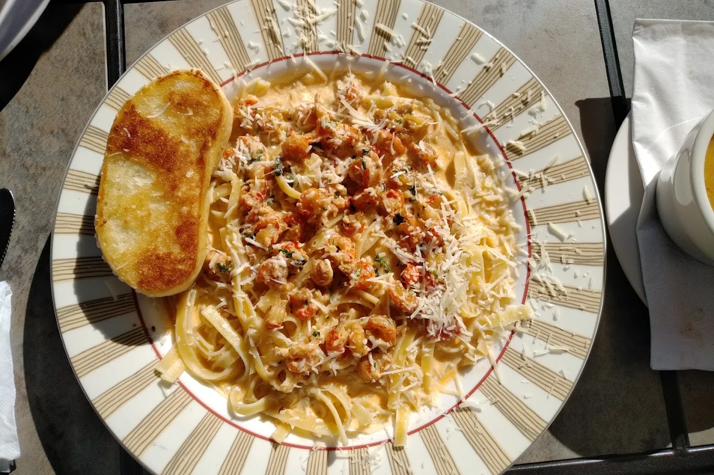
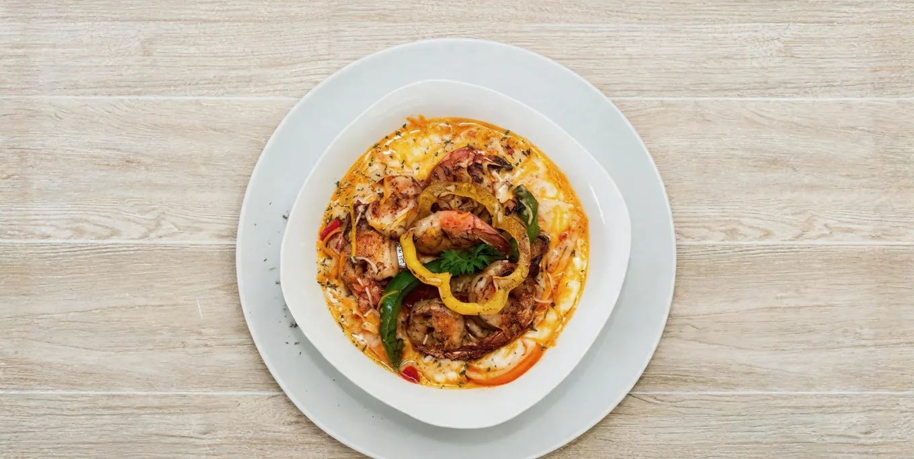
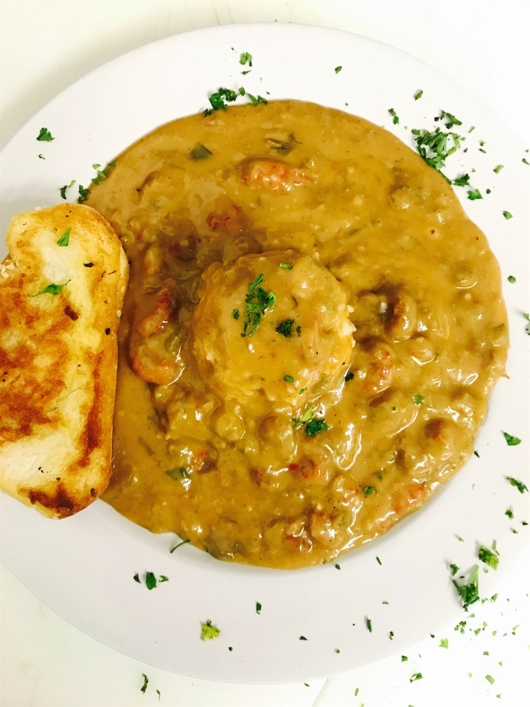
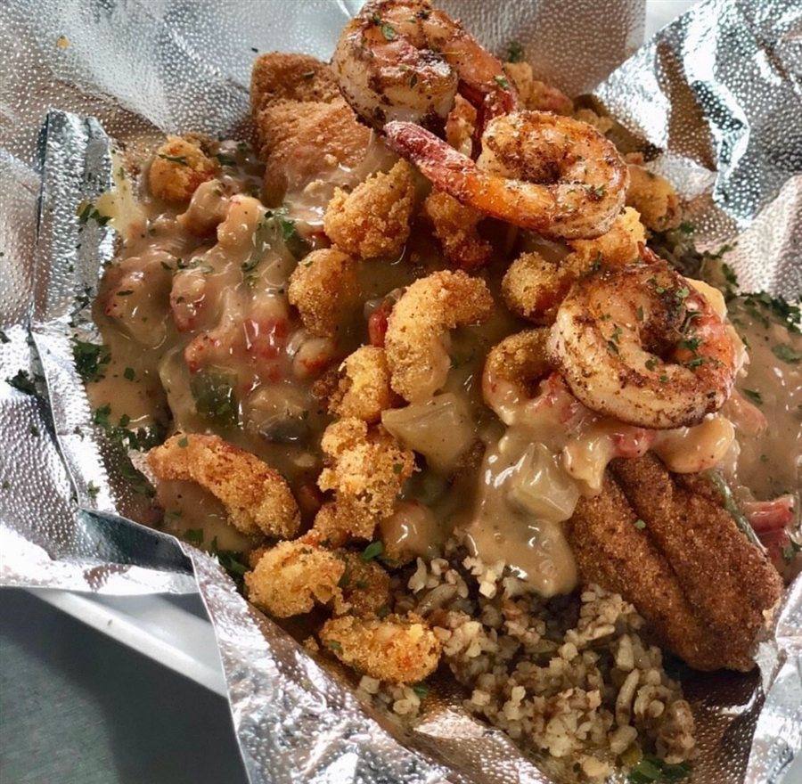

“Authentic” gets thrown around a lot when people search for Cajun food in Houston. We would rather let our guests define it. Bayou Fork Kitchen sits at 10600 Fondren Road in Southwest Houston, holds a 5.0 rating on Google across six reviews, and the same few things come up again and again in what people write: the people, the freshness, the flavor.
What guests say about us
Priscilla Ortiz, a Google Local Guide, wrote this after her visit:
“The owners are great and exude good energy. The food is very good and flavorful, made fresh by order. I’m very picky about my food, so to say that I liked it says a lot. I would definitely recommend.”
— Priscilla Ortiz, Google Local Guide
Derrin Bell kept it shorter, and gave us five out of five for food, service and atmosphere:
“Good people good food.”
— Derrin Bell, Google review
Between the two there is a pattern worth noticing. Neither review is about a gimmick. It is about being treated well and getting food that was cooked for you, not held for you.

Why guests choose Bayou Fork
Made fresh by order. Our kitchen builds each plate when you order it. Everything starts the same way: butter melting in a pot, or oil coming up to heat in the fryer. That is the part Priscilla noticed, and it is the part that is hardest to fake.
Flavor that is layered, not just seasoned. The seasoning is built in stages so the spice keeps working on your tastebuds through the whole plate, instead of a shake of Cajun seasoning at the end. Her word for it was flavorful. That is what we are going for.
Our own recipes. There are no handed-down recipe cards here. Everything is our own creation, a literal melting pot of Cajun and Creole cooking, led by Chef Blake, who trained in fine dining at Emeril’s and has spent eleven years cooking professionally across Mardi Gras Memphis, the French Quarter Food Truck and The Quarter Kitchen + Bar.
The people. Owner Penny runs the kitchen on a customer-centered model. When a guest says the owners “exude good energy,” that is the culture we are trying to run every day we are open.


What to order first
If you are new to us, start with the Crawfish Étouffée or the Gumbo, the two dishes that most clearly carry the Louisiana tradition. Want it fried? The Fried Shrimp Po-Boy and the Sweet Heat Wings are crowd favorites. Can’t decide? The Big Daddy is our house signature. Every platter comes with a side, and the dirty rice goes with just about everything. If you are weighing the styles, our guide to Cajun vs. Creole explains the difference.
Visit or order
We are open every day from 8.00am to 9.40pm, with drive-thru, pickup and delivery through DoorDash. You can order online, browse the full menu, or plan a bigger event with our catering. Been in? We would love to hear how it went: leave us a Google review.